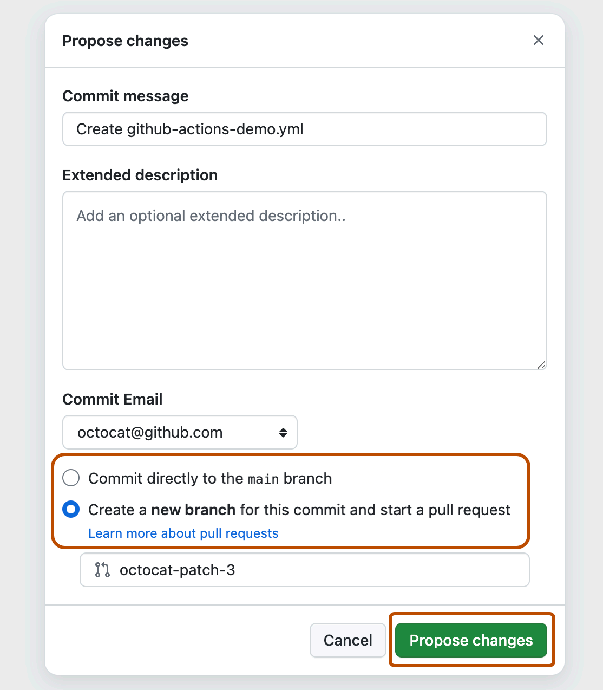
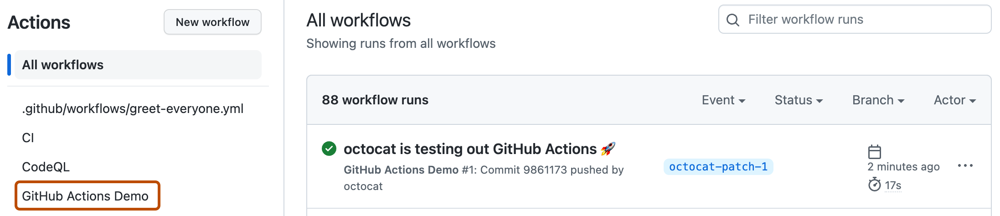
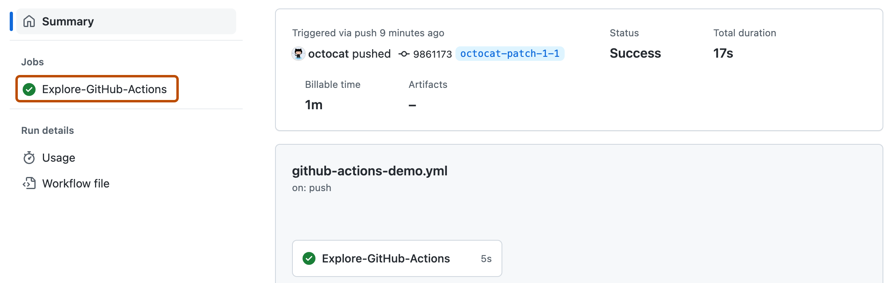
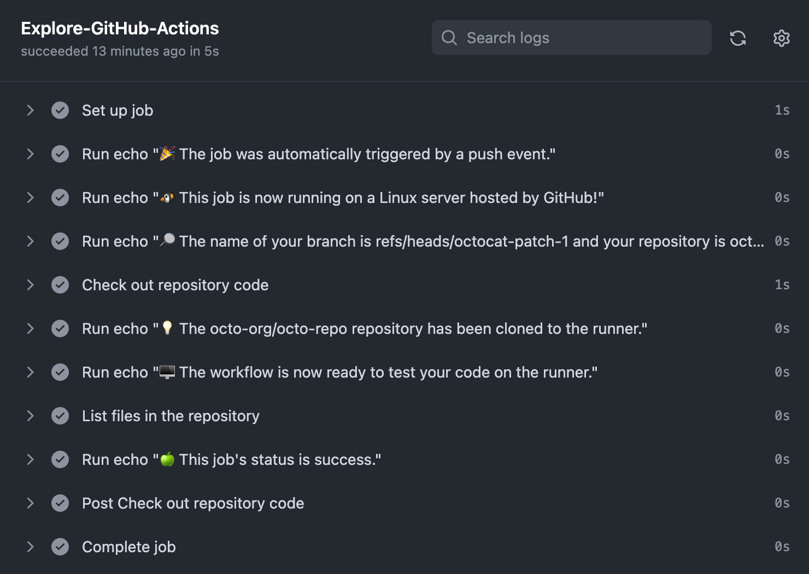
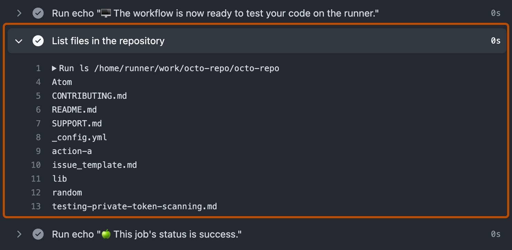

Try out the core features of GitHub Actions in minutes.
Introduction
GitHub Actions is a continuous integration and continuous delivery (CI/CD) platform that allows you to automate your build, test, and deployment pipeline. You can create workflows that run tests whenever you push a change to your repository, or that deploy merged pull requests to production.
This quickstart guide shows you how to use the user interface of GitHub to add a workflow that demonstrates some of the essential features of GitHub Actions.
For an overview of GitHub Actions workflows, see Workflows. If you want to learn about the various components that make up GitHub Actions, see Understanding GitHub Actions.
Using workflow templates
GitHub provides preconfigured workflow templates that you can use as-is or customize to create your own workflow. GitHub analyzes your code and shows you workflow templates that might be useful for your repository. For example, if your repository contains Node.js code, you'll see suggestions for Node.js projects.
These workflow templates are designed to help you get up and running quickly, offering a range of configurations such as:
Use these workflows as a starting place to build your custom workflow or use them as-is. You can browse the full list of workflow templates in the actions/starter-workflows repository.
Prerequisites
This guide assumes that:
You have at least a basic knowledge of how to use GitHub. If you don't, you'll find it helpful to read some of the articles in the documentation for repositories and pull requests first. For example, see Quickstart for repositories, About branches, and About pull requests.
You have a repository on GitHub where you can add files.
You have access to GitHub Actions.
Note
If the Actions tab is not displayed under the name of your repository on GitHub, it may be because Actions is disabled for the repository. For more information, see Managing GitHub Actions settings for a repository.
Creating your first workflow
In your repository on GitHub, create a workflow file called github-actions-demo.yml in the .github/workflows directory. To do this:
If the .github/workflows directory already exists, navigate to that directory on GitHub, click Add file, then click Create new file, and name the file github-actions-demo.yml.
If your repository doesn't have a .github/workflows directory, go to the main page of the repository on GitHub, click Add file, then click Create new file, and name the file .github/workflows/github-actions-demo.yml. This creates the .github and workflows directories and the github-actions-demo.yml file in a single step.
Note
For GitHub to discover any GitHub Actions workflows in your repository, you must save the workflow files in a directory called .github/workflows.
You can give the workflow file any name you like, but you must use .yml or .yaml as the file name extension. YAML is a markup language that's commonly used for configuration files.
Copy the following YAML contents into the github-actions-demo.yml file:
name: GitHub Actions Demo
run-name: ${{ github.actor }} is testing out GitHub Actions 🚀
on: [push]
jobs:
Explore-GitHub-Actions:
runs-on: ubuntu-latest
steps:
- run: echo "🎉 The job was automatically triggered by a ${{ github.event_name }} event."
- run: echo "🐧 This job is now running on a ${{ runner.os }} server hosted by GitHub!"
- run: echo "🔎 The name of your branch is ${{ github.ref }} and your repository is ${{ github.repository }}."
- name: Check out repository code
uses: actions/checkout@v6
- run: echo "💡 The ${{ github.repository }} repository has been cloned to the runner."
- run: echo "🖥️ The workflow is now ready to test your code on the runner."
- name: List files in the repository
run: |
ls ${{ github.workspace }}
- run: echo "🍏 This job's status is ${{ job.status }}."
At this stage you don't need to understand the details of this workflow. For now, you can just copy and paste the contents into the file. After completing this quickstart guide, you can learn about the syntax of workflow files in Workflows, and for an explanation of GitHub Actions contexts, such as ${{ github.actor }} and ${{ github.event_name }}, see Contexts reference.
Click Commit changes.
In the "Propose changes" dialog, select either the option to commit to the default branch or the option to create a new branch and start a pull request. Then click Commit changes or Propose changes.

Committing the workflow file to a branch in your repository triggers the push event and runs your workflow.
If you chose to start a pull request, you can continue and create the pull request, but this is not necessary for the purposes of this quickstart because the commit has still been made to a branch and will trigger the new workflow.
Viewing your workflow results
On GitHub, navigate to the main page of the repository.
Under your repository name, click Actions.
In the left sidebar, click the workflow you want to display, in this example "GitHub Actions Demo."

From the list of workflow runs, click the name of the run you want to see, in this example "USERNAME is testing out GitHub Actions."
In the left sidebar of the workflow run page, under Jobs, click the Explore-GitHub-Actions job.

The log shows you how each of the steps was processed. Expand any of the steps to view its details.

For example, you can see the list of files in your repository:

The example workflow you just added is triggered each time code is pushed to the branch, and shows you how GitHub Actions can work with the contents of your repository. For an in-depth tutorial, see Understanding GitHub Actions.
Next steps
GitHub Actions can help you automate nearly every aspect of your application development processes. Ready to get started? Here are some helpful resources for taking your next steps with GitHub Actions:
For examples that demonstrate more complex features of GitHub Actions, see Managing your work with GitHub Actions. These detailed examples explain how to test your code on a runner, access the GitHub CLI, and use advanced features such as concurrency and test matrices.
To certify your proficiency in automating workflows and accelerating development with GitHub Actions, earn a GitHub Actions certificate with GitHub Certifications. For more information, see About GitHub Certifications.